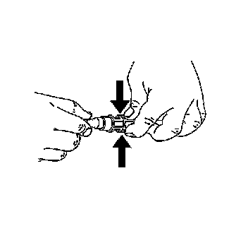
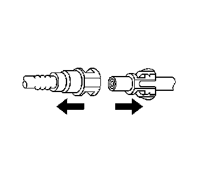
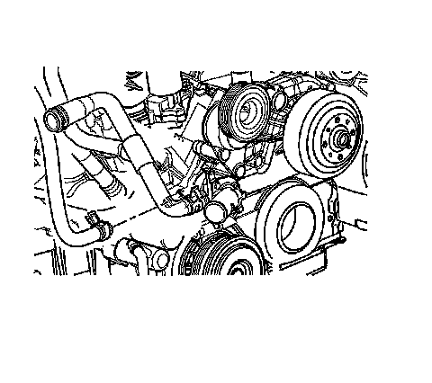
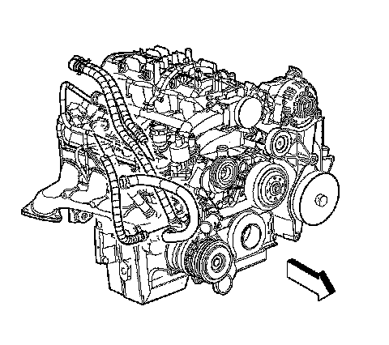
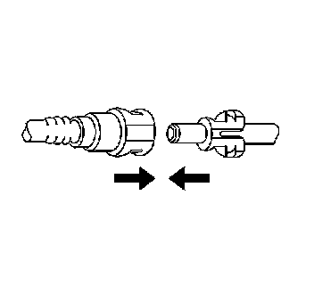

Heater Inlet Hose Replacement
HEATER INLET HOSE REPLACEMENT
REMOVAL PROCEDURE
1. Drain the cooling system. Refer to Draining and Filling Cooling System (Vac-N-Fill).
2. Remove the air intake tube.
3. Remove the heater and surge tank hoses from the mounting clip.

4. Squeeze the plastic retainer release tabs.

5. Pull the connection apart.

6. Remove the inlet heater hose from the water pump.

7. Remove the inlet heater hose.
INSTALLATION PROCEDURE
1. Install the inlet heater hose.
2. Install the inlet heater hose to the water pump.

3. Connect the heater hose to the heater core.
IMPORTANT: Firmly push the quick connect onto the heater core pipe until you hear an audible click.
4. Install the heater and surge tank hoses to the mounting clip.
5. Install the air intake tube.
6. Fill the cooling system. Refer to Draining and Filling Cooling System (Vac-N-Fill).